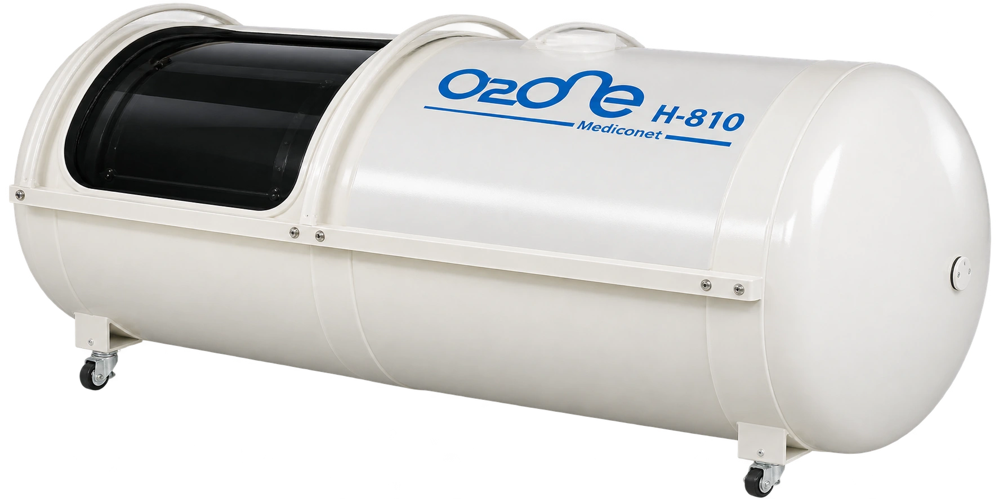

Гипербарическая оксигенация (барокамера)
В кислородной камере O2one-H810

Короткий ответ гостю
Барокамера позволяет временно увеличить количество кислорода, которое кровь может доставить к тканям. Во время сеанса установка поддерживает давление выше атмосферного. При повышенном давлении и достаточном содержании кислорода во вдыхаемой смеси больше кислорода может растворяться в плазме — жидкой части крови. Этот эффект используют в медицине, когда тканям требуется дополнительное снабжение кислородом, например при лечении некоторых трудно заживающих ран. Если вы рассматриваете барокамеру для отдыха и восстановления, специалист поможет оценить, что можно ожидать от сеанса именно в вашем случае.
Как барокамера влияет на снабжение тканей кислородом
Кислород нужен клеткам для выработки энергии. Из лёгких он переходит в кровь, которая доставляет его к тканям. Большую часть кислорода переносит гемоглобин — белок в красных клетках крови. У здорового человека при обычном дыхании гемоглобин, как правило, уже почти полностью насыщен кислородом. При гипербарическом воздействии может увеличиться количество кислорода, растворённого непосредственно в плазме.
За переход кислорода из лёгких в кровь отвечает разница его парциальных давлений. Парциальное давление кислорода — это часть общего давления, которую создаёт кислород во вдыхаемой смеси. Оно растёт при повышении общего давления или увеличении доли кислорода в смеси. Поэтому эффект зависит от обоих параметров.
Польза и место в программе восстановления
У медицинской гипербарической оксигенации есть конкретные показания. При некоторых трудно заживающих ранах дополнительная доставка кислорода к тканям может поддерживать их заживление. Для этого врач назначает лечебный режим с учётом диагноза.
Для гостя курорта вопрос обычно другой — стоит ли включить барокамеру в программу восстановления после нагрузок или напряжённого периода. Сеанс проходит в покое и позволяет выделить время на отдых. Ожидания от самой процедуры стоит обсудить со специалистом: по одному лишь изменению количества кислорода в плазме нельзя предсказать прилив сил или ускорение восстановления.
Как проходит сеанс
Сотрудник помогает расположиться в одноместной O2one-H810. Перед началом он показывает, как изнутри связаться с ним и как завершить сеанс с помощью внутренней панели. Установка автоматически повышает давление до 1,3 ATA и поддерживает его в основной части сеанса. Это на 30% выше стандартного атмосферного давления. Гость в это время лежит спокойно. Перед выходом давление возвращается к обычному.
При выходе на рабочее давление или его снижении уши может заложить, как в самолёте. Иногда помогает сглотнуть или зевнуть. При боли, выраженном дискомфорте или тревоге сразу скажите сотруднику.
В прайсе клиники предусмотрены 30, 45–60 и 90 минут. Подходящую продолжительность уточняет специалист.
Подготовка к посещению
Заранее уточните требования к одежде и косметике. Перед входом оставьте телефон, часы и другую электронику снаружи. Если вам некомфортно в закрытых пространствах, предупредите об этом до начала. Можно заранее посмотреть камеру и обсудить со специалистом, как будет проходить сеанс.
Противопоказания
Неустранённый пневмоторакс — противопоказание к сеансу. При этом состоянии воздух скапливается вокруг лёгкого и может его сдавливать.
До записи нужна оценка медицинского специалиста, если у вас:
- насморк, повышенная температура, боль или заложенность ушей, трудности с выравниванием давления;
- заболевание лёгких, перенесённый пневмоторакс или недавняя операция на ушах, пазухах или грудной клетке;
- беременность, судорожные приступы или диабет с эпизодами низкого сахара;
- выраженный страх замкнутого пространства.
Специалист оценит, можно ли проводить сеанс или его нужно отложить.
Частые вопросы
Зачем барокамера, если можно подышать свежим воздухом в горах?
Прогулка в сосновом лесу даёт движение и возможность отдохнуть. Доля кислорода в горном воздухе примерно такая же, как на равнине. Но чем выше вы поднимаетесь, тем ниже атмосферное давление. Воздух становится менее плотным, и при вдохе того же объёма в лёгкие попадает меньше молекул кислорода.
В барокамере давление, наоборот, повышают. Даже при той же доле кислорода это увеличивает его парциальное давление — ту часть общего давления, которая приходится на кислород. В таких условиях больше кислорода может раствориться в жидкой части крови и стать доступным тканям. Если вы вдыхаете обогащённую кислородом смесь, этот эффект усиливается. Именно ради такого изменения доставки кислорода и используют повышенное давление.
Кислород даёт больше энергии?
Клетки действительно используют кислород для выработки энергии. Ощущение бодрости зависит от множества факторов. По самому факту посещения барокамеры нельзя предсказать, что у вас прибавится сил или снизится усталость.
Смогу ли я связаться со специалистом и закончить сеанс раньше?
Да. В нашей O2one-H810 есть двусторонняя связь со специалистом и кнопка остановки на панели внутри камеры. Если вам станет тревожно, появится боль или станет плохо, сразу сообщите об этом по внутренней связи. При необходимости вы можете остановить сеанс изнутри. Камеру открывают после того, как давление вернётся к атмосферному. Перед началом специалист покажет вам панель и объяснит порядок действий.
Чем отличаются сеансы на 30, 45–60 и 90 минут?
Это варианты продолжительности по прайсу. Подходящее время и необходимость повторных сеансов специалист определяет с учётом цели, состояния здоровья и переносимости процедуры.
Как предложить гостю
Если вы подбираете процедуры для программы восстановления и хотите узнать, какую роль в ней может играть барокамера, я помогу обсудить это с нашим специалистом.